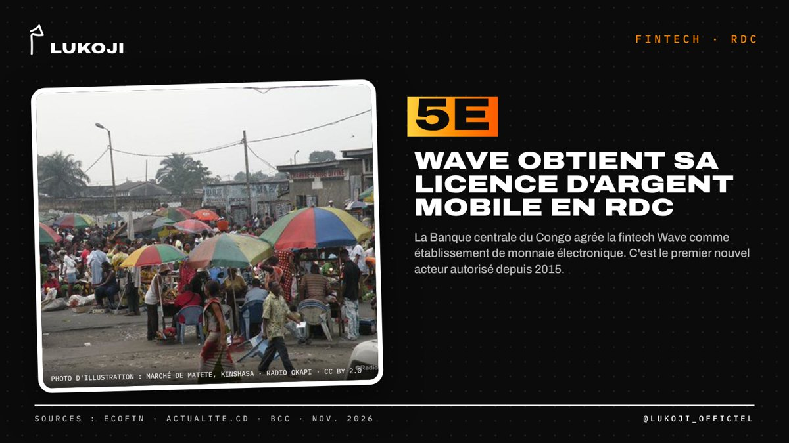

La Banque centrale du Congo (BCC) a agréé Wave comme établissement de monnaie électronique. La fintech, née au Sénégal, devient le cinquième acteur autorisé à proposer de l'argent mobile en RDC, et le premier nouveau venu depuis 2015.
Ce qui s'est passé
La BCC a annoncé l'agrément le 18 novembre 2026. Wave l'avait confirmé la veille, depuis Kinshasa. Cette licence permet à l'entreprise d'émettre, de gérer et de distribuer de la monnaie électronique en RDC, c'est-à-dire de proposer un portefeuille sur téléphone pour envoyer, recevoir et payer.
Selon Agence Ecofin, aucun nouvel établissement de monnaie électronique n'avait été agréé dans le pays depuis onze ans. Wave RDC est dirigée par Jérémie Lukusa, son directeur général. L'entreprise dit vouloir travailler avec la BCC et des partenaires locaux.
Un établissement de monnaie électronique n'est pas une banque : il ne fait pas de crédit. Son métier, c'est de garder l'argent déposé sur les portefeuilles et de le faire circuler d'un téléphone à l'autre, ou d'un téléphone vers un commerce.
Ce qu'on ne sait pas encore : la date de lancement du service et ses tarifs. Wave ne les a pas annoncés.

Pourquoi ça compte pour un entrepreneur
Pour un petit commerce, l'argent mobile sert à encaisser les clients, à payer les fournisseurs et à envoyer de l'argent sans transporter de liquide. Un acteur de plus sur ce marché, c'est une option de plus pour encaisser et payer.
Le marché comptait quatre établissements agréés. Un cinquième arrive : les clients auront davantage de choix, et les commerces devront peut-être accepter plusieurs portefeuilles pour ne perdre aucune vente.
Ce que tu peux en tirer
- Note ce que te coûte l'argent mobile aujourd'hui. Frais de retrait, de transfert, de paiement : quand le nouveau service arrivera, tu pourras comparer avec de vrais chiffres.
- Demande à tes clients comment ils veulent payer. Si une partie d'entre eux passe à un nouveau portefeuille, mieux vaut le savoir avant de perdre une vente.
- Garde une trace de chaque encaissement. Quel que soit le portefeuille, l'historique des paiements sur téléphone t'aide à suivre tes ventes et à montrer ton activité à un partenaire ou à une banque.
- Attends les tarifs officiels avant de changer. Pour l'instant, ni le prix ni la date de lancement ne sont connus.
Sources : Banque centrale du Congo (annonce du 18 novembre 2026), Agence Ecofin (18 novembre 2026), Actualite.cd (18 novembre 2026), Socialnetlink et TechCabal (19 novembre 2026).
LUKOJI · Innover · Créer · Impacter